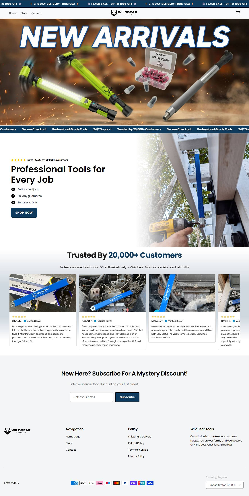
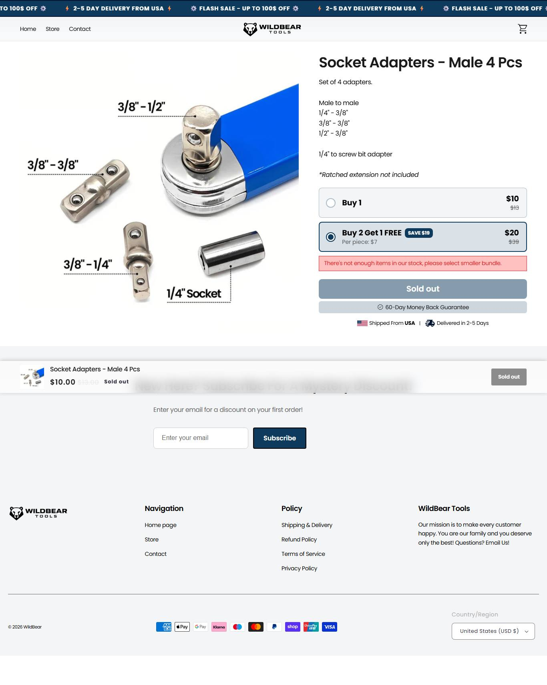

A líder do nicho. 2 meses de domínio, 187 anúncios ativos na página da marca e mais 162 na persona Miles Turner. Escala por público, poucos criativos duplicados.
Ancora em Black Friday / 'Up to 55% OFF'. Ancoragem por economia contra o preço do mecânico.
| Produto | Preço |
|---|---|
| Offset Extension - MAX | $99 |
| Offset Extension 2.0 | $79 |
| MagnetBeam X | $69 |
| VisiPro | $25 |
| Screw Plugs | $19 |
| Socket Adapters - Male 4 pcs | $10 |
Poucos criativos em muitos públicos = escala por budget, não por produção. Cluster real ~349 ativos (marca + Miles Turner).
Momentum da operação: crescendo (de Tranco + sobrevivência de criativo + idade do campeão)
Origem do tráfego: US 73.8% · Australia 13.77% · Canada 5.54% · Mexico 2.9% · UK 2.07%
Bounce 45,6% (audiência na média) + espalha pra AU/CA/MX = operação buscando volume no anglo inteiro.
Nao expoe contagem via JSON-LD (usa Trustpilot + widget). Nao derivavel.


Contar anúncio diz quem ganha; isto diz por que ganha, que é o que se copia. Decodificado dos criativos e do funil coletados.
| Big idea / ângulo | A ferramenta de ~$89 que alcanca o parafuso escondido que ja te custou centenas na oficina. |
| Mecanismo único | Offset extension: chega onde o ratchet nao chega. |
| Formato de hook | Oferta + demonstracao ('Reaches Where Nothing Else Can', 'This tool would have saved me hundreds'). |
| Estrutura do presell | Pagina-persona (Miles Turner) + oferta direta com desconto agressivo (Black Friday 55% OFF). |
| Objeção principal | Preco, quebrada com ancoragem no custo da oficina. (comentarios nao raspados) |
Escala provada, estrutura replicável no seu porte, produto barato e copy madura. É o benchmark a modelar — mas não a enfrentar de frente por budget em US. Modele a estrutura, ataque território aberto (UK/DE) ou produto adjacente.
| Eixo (0–2) | Pontos |
|---|---|
| Sourcing simples | 2/2 |
| Ticket fecha sem escada complexa | 2/2 |
| Criativo simples de produzir | 2/2 |
| Mecanismo com urgencia | 2/2 |
| Investimento de entrada baixo | 1/2 |
| Sem dependencia de autoridade | 2/2 |
| Total | 11/12 |
Produto unico achavel no AliExpress, dor urgente, criativo IA/advertorial. So o investimento cai pra 1: escala por budget (duplicacao ~6x) exige bolso pra volume de publico.